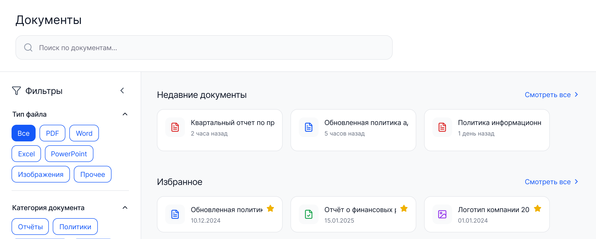
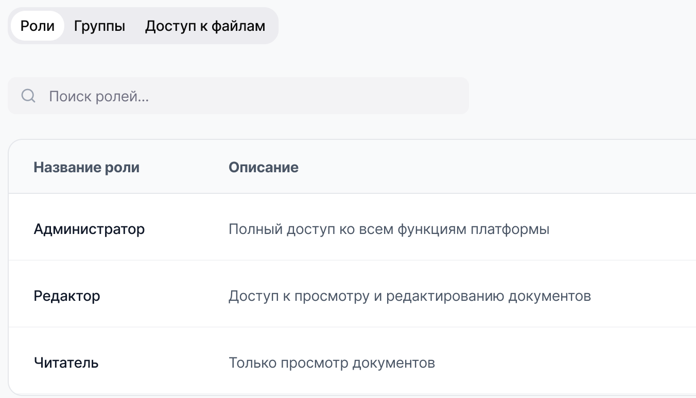

Сервис и техподдержка
«Какой порядок замены оборудования по гарантии?»
Инструкции, регламенты обслуживания, описания типовых обращений
Querion отвечает сотрудникам по документам компании и показывает, откуда взят ответ. Каждый видит только то, что ему положено — в сервисе, на производстве, у юристов и в HR
Отпуск оформляется по заявлению. Заявление согласуется с непосредственным руководителем и передается в отдел кадров1
Регламенты, инструкции и приказы лежат в разных папках и системах, у каждого отдела свои
Искать нужный пункт самому долго, поэтому спрашивают опытных сотрудников и отвлекают их от работы
Среди документов есть зарплаты, договоры и приказы, поэтому общую базу знаний не сделать без настройки прав
Сотрудник задает вопрос своими словами и сразу получает ответ по документам компании — со ссылкой на источник
Один вопрос — и весь путь от него до документа
Сотрудник пишет обычными словами — так, как спросил бы коллегу
Querion собирает ответ только из документов вашей компании
Видно место в документе, на котором основан ответ
Документ открывается в один клик — формулировку можно проверить целиком
Согласование договоров в компании проходит в три этапа. Сначала проект договора готовит инициирующее подразделение и передает на согласование в юридический отдел. После юридической проверки документ направляется в финансовый отдел для оценки коммерческих условий. Окончательное утверждение договора осуществляет генеральный директор или уполномоченное лицо в соответствии с установленными лимитами полномочий
Проект договора готовит инициирующее подразделение и передает на согласование в юридический отдел — Регламент договорной работы.pdf
Пример на тестовых документах · ответ с учетом прав пользователя
Находит ответ, даже если в вопросе другие слова, чем в документе
Отвечает по найденным фрагментам загруженных документов. Если ответа в них нет, так и говорит
Ответ сопровождается ссылкой на документ, из которого он взят

«Какой порядок замены оборудования по гарантии?»
Инструкции, регламенты обслуживания, описания типовых обращений
«Какие требования техкарты к сборке узла?»
Технологические карты, стандарты предприятия, инструкции по охране труда
«Какой срок претензионного порядка в типовом договоре?»
Типовые договоры, внутренние политики, методики
«Как оформить отпуск и кому отправить заявление?»
Положения, приказы, памятки для новых сотрудников
Роли, группы и доступ к отдельному файлу. Сотрудник получает ответы только по тем документам, к которым у него есть доступ
HR-регламенты по оплате труда видит только HR. Инженер видит инструкции по оборудованию, но не положение об оплате
«Как рассчитывается квартальная премия?»
Ответ найденПорядок расчета описан в положении об оплате труда
Положение об оплате труда.pdfОтвета нетВ доступных вам документах ответа нет
На вашем сервере или на арендованном GPU-сервере в России. Отдельная установка под каждого заказчика. Документы загружаются в систему или подключаются из хранилища
Управление пользователями и история вопросов к системе

4–6 недель
Точность — на ваших 30–50 эталонных вопросах
Время до ответа
Вопросы без обращения к коллегам
Свидетельство о государственной регистрации программы для ЭВМ №2026667060, получено в июне 2026
Напишите нам — покажем систему на демо или обсудим пилот на 4–6 недель